LTE 物理层技术概要
目录
1 引言
本文总结LTE系统的无线接入技术尤其是其物理层的一些核心技术。正是在其空口（Air Interface）中采用了这些核心技术，LTE系统才有相对于之前无线通信协议的巨大飞跃。围绕这些技术，我们逐步讨论LTE系统的优缺点。本文中涉及的几个主题包括：1）LTE所使用的无线频谱，2）TDD和FDD双工模式，3）带宽分配，4）帧格式，5）LTE的时频资源表示，6）LTE的上下行数据处理过程。总之内容比较广泛，并不会在某一个主题上逗留过多篇幅。您可以把这篇博文看做是一个提纲挈领总结。
生手和有一定基础者都可以从本文获益。对于生手，阅读通信协议很容易陷入细枝末节的汪洋大海，读了一遍又一遍还是不得要领，读的快忘得快。本文去除了那些细枝末节，读完你会对LTE的物理层有大概的认识，当然要成为专家还需要下更多功夫去理解每一个细节。对于有一定LTE协议基础的人来说，本文可以帮助你快速回忆LTE物理层系统的各个知识要点，“温故而知新，可以为师矣”。
本文的另一个好处是，在每一个知识点我都尽量附上超链接，读者可以随时离开本文，跳转到感兴趣的知识点上。所以，我也不期望您能一口气读完本文，您完全可以根据自己的需要，丰俭由你。
2 空口（Air Interface）
如果妇孺皆知有点过分的话，用众所周知就差不多：LTE系统的下行链路空口基于OFDM技术，上行链路空口基于SC-FDM技术。无论是上行还是下行都与OFDM紧密相关。采用OFDM技术的最重要的优点有：1）有效的对抗多径效应引起的码间干扰，2）允许相邻子载波之间有一半重叠（大大提高了频谱效率），3）使用FFT技术快速实现，4）OFDM技术天然与MIMO技术完美的结合，5）把宽带转换成多个窄带从而避免频率选择性衰落，6）灵活的资源分配。正是这些优点让OFDM技术成了LTE系统的十全大补丸。
由于采用了OFDM技术，LTE系统不仅可以灵活的分配时频资源还可以方便的支持多种物理带宽。在LTE系统中，频谱资源的划分与使用非常的灵活，这要归功于OFDM技术和MIMO技术的默契配合。另外，为了降低延迟，LTE系统的帧长为10ms，较短的帧长使得信道估计以及终端与基站之间反馈变得更加可靠，值得一提的是在下一代移动通信系统中，即即将到来的5G帧长会进一步被缩短，有可能实现1ms短帧。
3 频谱资源
LTE协议为该系统指定了不同物理频带的可用频谱资源。LTE系统的一个特性就是与之前的无线系统兼容，所以3GPP之前为3G划分的频谱可以用于LTE系统中。当然，除了之前3GPP划分的3G频带，LTE系统额外指定了新的频谱资源。不同的国家为LTE划分的频带也不同，这样LTE系统支持所有的频带保证了一部手机走天下（当然，有些运营商会对手机添加软件锁或者电信设备制造商会故意阉割对某些频带的支持，这些都是出于利益考虑。技术上，支持LTE全频带的手机可以做到一机走天下）。
同之前的3GPP标准一样，LTE系统支持FDD和TDD双工传输模式。在FDD系统中，频谱是成对划分的，分别用于上行和下行数据传输。FDD的频谱就像双向车道一样，你来我往在不同的道路上，互不干扰。在TDD系统中，上下行传输在不同的时间使用相同的频谱。TDD的频谱就像有些地方的潮汐车道一样，你来我往在同一车道，但是不同的时间。比较而言，TDD双工模式更有利于零碎频谱的使用。毕竟，频谱资源是有限且不可再生的。像FDD那样划分成对频谱并不是那么容易。
3GPP的Release 11标准为LTE的FDD模式划分了25对频带，如下图所示：

图 1: Release 11 LTE FDD频带划分
3GPP的Release 11标准为LTE的TDD模式划分了11对频带，编号为33到43，如下图所示：

图 2: Release 11 LTE TDD频带划分
4 单播和多播
什么是单播？单播就是点对点，基站向单个用户发送数据，就像打电话这种服务，就是单播服务。什么是多播？多播就是点对多，基站向多个用户发送数据，就像电视台向多个用户发送电视节目。在LTE系统中，除了支持单播外，还支持多媒体广播多播服务（Multimedia Broadcast/Multicast Service, MBMS）。MBMS可以高速的广播/多播语音和视频服务。
MBMS基于多小区传输模式，有专用的传输和控制信道。我们称MBMS的网络叫做多媒体广播单频网络（Multimedia Broadcast Single-Frequency Network, MBSFN）。多媒体信号在MBSFN网络的多个小区内发送给用户。由于是多个小区广播相同的信号到终端，可以大大提高终端接收信号的SNR，同时可以大大提高多媒体信号的传输速率。单播网络和多播网络在数据传输的过程中采用风格迥异的控制信息，网络参数也不尽相同。当然，本文会更多的关注单播过程所采用的技术。
5 带宽划分
IMT-Advanced要求LTE标准必须能够灵活划分带宽。LTE标准规定了六种带宽：从1.4MHz到20MHz。下图给出了LTE标准规定的五种带宽模式。在LTE系统中带宽的分配是以RB为单位的，1个RB占用的带宽是180KHz，每个RB共有12个子载波，每个子载波宽度为15KHz。五种带宽模式的RB数从6到100不等，或许你会疑惑180K*6 =1.08MHz 不是1.4MHz，这是因为每一种带宽还需要和旁边的频带之间有保护带宽，从而避免干扰。从下图可以看出，3M-20M带宽系统的频谱利用率大约90%左右，而不是100%。1.4MHz带宽的频谱利用率仅仅有77%左右。

图 3: LTE标准规定的5中带宽模式
6 时域帧格式
LTE的时域帧格式如下图所示。要理解LTE，首先要理解LTE信号的时频表示。在时域，LTE的发射信号以10ms一帧的方式向外发射。每个帧又被分为10个1ms的子帧。每一个子帧包括两个0.5ms的时隙。每个时隙包含六到七个OFDM符号。一个时隙中具体是六个还是七个OFDM符号依赖于循环前缀的长度。

图 4: LTE 时间帧格式
接下来，讨论LTE空口信号的时频表示。
7 信号的时频表示
LTE空口的一个显著特征是其信号的时频映射。原始信息比特经过编码与调制，映射为复数信号，最终按照一定的规则映射到时频资源栅格上。LTE系统系统的时频资源栅格如下图所示。

图 5: LTE 时频资源栅格图
LTE的时频资源栅格图横轴表示时域OFDM符号，纵轴表示频域OFDM子载波。上图给出的是正常循环前缀（normal cyclic prefix，记得么还有扩展循环前缀）的时频资源栅格图：每个时隙有7个OFDM符号。每一个Resource Block(RB)在频域上是180KHz，在时域上是0.5ms。所以一个RB包含的RE数量是12*7=84。在包含扩展循环前缀的时频资源栅格图中，一个时隙有6个OFDM符号。因此，一个RB包含的RE数量是72。RB的单位非常重要，因为它是资源调度的最小单元。
我们之前提到过，LTE系统中允许调度的RB数量从6到100不等，带宽从1.4MHz到20MHz。在上行和下行传输链路上，RB的概念几乎是一样的，唯一的区别在于中心频率的位置。在上行链路中，中心频率位于两个子载波之间，所有的子载波都用于数据传输；在下行链路中，零频周围的15KHz（一个子载波的宽度）不用于数据传输。
8 OFDM 多载波传输
在LTE标准中，上下行传输都是基于OFDM来完成的。通过OFDM技术，宽带信号由多个窄带信号完成。我们称每个窄带为一个子载波。生成OFDM符号时，首先映射复数符号到每个子载波上。这些子载波沿着时频资源栅格图的频率轴（也就是纵轴）分布开来。假设每个子载波上的符号为\(a_{k}\)，则每个子载波上映射的符号为\(a_{k}\)。假设带宽内有\(N\)个子载波，子载波间隔为\(\Delta f\)，则带宽可以表示为：
\begin{equation} \label{eq:1} BW = N\Delta f \end{equation}每一个子载波的位置都可以看做子载波间隔 \(\Delta f\)的整数倍，即
\begin{equation} \label{eq:2} f_{k} = k \Delta f \end{equation}OFDM调制器内涵\(N\)个复数信号调制器，每一个调制器对应一个子载波，具体实现过程为：
\begin{equation} \label{eq:3} x(t) = \sum_{k = 1}^{N} a_{k} e^{j2\pi f_{k} t} = \sum_{k = 1}^{N} a_{k} e^{j2\pi k\Delta f t} \end{equation}假设信道采样率为\(F_{s}\)，则信道采样间隔为\(T_{s} = 1/F_{s}\)，则发射信号的离散表示为：
\begin{equation} \label{eq:4} x(n) = \sum_{k = 1}^{N} a_{k} e^{j2\pi f_{k} n/N} \end{equation}其中\(N\)为采样点数，也是OFDM调制过程中IFFT的点数。
8.1 循环前缀
在基于OFDM技术的通信系统中，循环前缀的添加是非常重要的。其作用在于：1） 消除多径信道的影响，2）保证OFDM信号子载波之间的正交性。
我们知道在无线信道环境中，无线信号通过多条路径或反射，或折射，或衍射到达接收端。并不是所有的路径都一样长，因此信号到达的时间也有早有晚。考虑到无线信道环境的多样性，实际系统中的传输路径是千差万别的。如果真有两路信号分毫不差同时出发同时到达，这两路信号也真是够有缘分的。大多数信号都是有缘无分：同时从发射机出发，却无法同时到达接收机。之所以同一个信号却在不同时刻到达，就是因为无线信道传输环境的多样性造成信号经历了不同的路径，这就是多径。
无线通信之所以如此迷人就是因为有信道多样新的存在。曾经有一段时间，人们认为多径效应是不好的，它会增加接收机接收信号的难度，但是三十年河东三十年河西，三十年还不到人们就发现在MIMO系统中，多径效应反倒是一件好事。通过引入多天线，把原来的单输入单输出系统（Single Input Single Output, SISO）系统转换为多输入多输出系统（Multiple Input Multiple Output, MIMO）系统，多径效应在不提高发射功率不占用额外频谱资源的前提下反而带来系统容量的提升。关于MIMO系统是如何利用信道的多径效应，会在另外的文章中展开。
现在让我们回到循环前缀。循环前缀是多载波系统的重要参数。首先循环前缀的长度必须比多径信道的最长时延扩展长才能避免符号间干扰。其次，在一个OFDM符号前添加循环前缀会造成传输资源的浪费，引入了系统冗余。因此必须尽可能的缩短循环前缀的长度，并且保证没有符号间干扰。为此，LTE针对不同的业务场景规定了两种不同的循环前缀，如表1所示：
| 循环前缀 | 子载波间隔（kHz） | 每个RB子载波数 | 每个RBOFDM符号数 |
|---|---|---|---|
| 正常循环前缀 | 15 | 12 | 7 |
| 扩展循环前缀 | 15 | 12 | 6 |
| 扩展循环前缀 | 7.5 | 24 | 3 |
在LTE系统中，规定了三种循环前缀，子载波宽度为15KHz的常规的循环前缀长4.7 \(\mu s\)，子载波宽度为15KHz的扩展循环前缀长为16.6 \(\mu s\)，子载波宽度为7.5KHz的循环前缀为33 \(\mu s\)。7.5KHz子载波宽度仅用于多播和广播的场景中。 4.7 \(\mu s \)的循环前缀足够应付大多数城市和郊区通信环境。考虑到OFDM符号长度为66.7\(\mu s\)，循环前缀占用了7%的通信资源。对于16.6\(\mu s\)的循环前缀，则占用了大约25%的通信资源。对于农村通信环境而言，需要较长的循环前缀。
8.2 子载波间隔
较小的子载波间隔保证每个子载波经历频率平坦衰落。然而，子载波的宽度不可能无限小，其受多普勒频移，相位噪声的影响。移动终端的移动会带来多普勒频移，移动速度越快多普勒频移越大，多普勒频移会带来子载波间干扰。相位噪声来源于晶振的波动，同样也会带来子载波间干扰。权衡信道环境和实现成本，LTE系统规定常规子载波宽度为15KHz。
8.3 RB大小
在LTE系统中，一个资源元素块被称为一个资源块（有点废话），英文是Resource Block，我们简称为一个RB。RB是资源调度的基本单位，RB大小的选择受几个因素的影响。首先，RB要足够小，这样才能RB内的信道相近，方便为用户分配信道状态好的RB资源。另一方面，基站并不知道哪一块RB的信道好，需要UE反馈信道状态，而UE的反馈带来额外的开销。因此，RB块也不能太小，否则会带来较大的反馈开销。在LTE系统中，1ms子帧保证了低延迟，180KHz宽度的RB保证对小包的支持。
8.4 频率域划分
LTE支持不同的系统带宽。OFDM和SC-FDM通过FFT实现，因此我们可以通过选择FFT的点数来实现对不同带宽的支持。不管系统中支持的带宽为多少，LTE的一个OFDM符号都为66.7\(\mu s\)，这也保证了在不同带宽系统中，子载波宽度都为15KHz。固定的子载波宽度也保证了同样的均衡技术可以用于不同带宽的通信模式。在LTE系统中不同的带宽对应的相关参数如表2所示。
| 带宽（MHz） | 1.4 | 3 | 5 | 10 | 15 | 20 |
|---|---|---|---|---|---|---|
| 采样率（MHz） | 1.92 | 3.84 | 7.68 | 15.36 | 23.04 | 30.72 |
| FFT大小 | 128 | 256 | 512 | 1024 | 1536 | 2048 |
| RB数 | 6 | 15 | 25 | 50 | 75 | 100 |
8.5 接收过程
尽管LTE系统没有规定接收机的设计细节，但是讨论接收过程也可以让我们更清楚发射端的设计原因。整体而言，接收过程是发射过程的逆过程。首先从接收到的OFDM符号中移除循环前缀，接着进行OFDM解调（使用FFT来完成）。通常，由于信道的衰落特性，我们需要对接收符号进行均衡操作，去除信道带来的影响。为了执行符号均衡，我们首先要估计信道。估计信道要用到参考信号，具体而言是小区参考信号（Cell Specific Reference, CSR）。CSR是收发端都知道的信号，接收端通过经历了信道畸变的CSR来估计信道。通常，我们只在少数的时频资源上发送CSR，然后估算这几个CSR对应的时频资源上的信道，然后根据有限的估计，通过插值的方式得出其他资源栅格上对应的信道。对接收的信号除以其对应的信道，就算是完成了符号均衡。当然实际系统中可能不是除法这么简单，或许会考虑前后两个符号之间的关系，或许会使用维纳滤波等比较高级的信号处理方式。采用何种信号处理算法取决于对性能的要求和对计算复杂度的容忍度。
9 单载波频分复用
LTE上行采用一种叫做单载波频分复用（SC-FDM）的接入方式。这种方式是OFDM的一种变形，主要目的是保留OFDM优点的前提下，降低峰均功率比。降低峰均功率比对射频功放器件的线性工作范围要求降低，从而降低终端的制造成本。SC-FDM的实现很简单：在OFDM调制器之前使用DFT做一次预编码，就像使用DFT来做扩频一样。所以SC-FDM有时候也叫做基于DFT扩频的OFDM，即DFTS-OFDM。之所以叫做基于DFT的扩频，是因为一个符号通过DFT之后其频谱被扩展到整个频域。而OFDM系统的每一个符号仅仅占用一个子载波。通过将符号的能量扩频到整个频域保证发射信号的功率动态范围变化不大，至少比基于OFDM的多载波系统变化缓慢。
10 LTE系统的资源栅格内容
根据循环前缀长度不同，LTE系统在一个1ms的子帧中可以传输12到14个OFDM符号。根据带宽不同，LTE系统提供了6到100可选的RB数。接下来，我们关心的是这些时频资源是怎么分配的？在每个RE中传输的内容都是什么？
图6给出了单播系统中用户数据，小区参考信号，控制信号的分配情况。
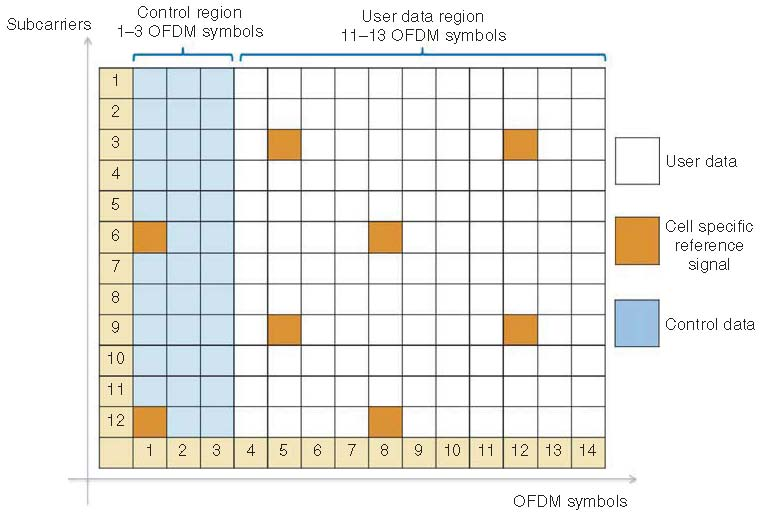
图 6: LTE单播系统时频资源传输内容
讨论每个RE中传输的内容需要了解LTE系统中物理层信道，传输信道和逻辑信道之间的关系。相对于UMTS系统和3GPP其他的标准，LTE大大削减了专用信道的作用，更加倾向于使用共享信道。因此，LTE系统大量的传输信道和逻辑信道合并到物理共享信道。除了传输数据信号，在物理信道中还传输了两种信号：参考信号和同步信号。
11 物理信道
制定LTE协议的一个目标是构建更加高效和平坦的协议架构。许多3GPP协议中存在的专用信道被共享信道替代，物理信道的数量大为减少。图给出了LTE无线接入层的结构以及对应的信道名称。
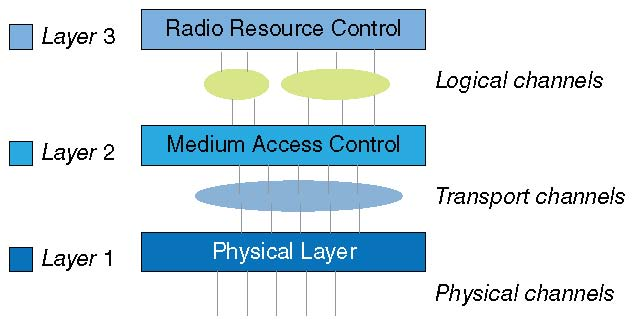
图 7: LTE无线接入层的划分及信道名称
逻辑信道（logical channel）用于连接无线链接控制层（Radio Link Control，RLC）和MAC层。LTE定义了两种逻辑信道：1）数据业务逻辑信道，2）控制逻辑信道。数据业务逻辑信道传输用户数据，控制逻辑信道传输控制信息。
传输信道（Transport channels）链接MAC层和PHY层，物理信道（physical channels）由PHY的收发机实现。每一个物理信道都由一些RE承担，在这些RE上传输了来自高层协议的数据。下行和上行的数据传输使用下行共享传输信道DL-SCH和上行共享传输信道完成。一个物理信道使用分配的RE来发送特定传输信道上的数据。每一个传输信道都映射到指定的物理信道上。但是物理信道和传输信道并不存在一一对应的关系，有一些物理信道并没有对应的传输信道。L1/L2之间的控制信道用于传输下行控制信息（Downlink Control Information, DCI）。终端利用这些控制信息进行下行数据的接收和译码。上行控制信息UCI被用来提供资源分配和实现HARQ。上下行链路的逻辑信道，传输信道和物理信道之间的关系不尽相同。
11.1 下行物理信道
表3给出了LTE下行物理信道的名称和各自的任务：
| 物理信道名称 | 缩写 | 功能 |
|---|---|---|
| Pyhsical Downlink Shared Channel | PDSCH | 传输单播用户数据信息和寻呼信息 |
| Physical Downlink Control Channel | PDCCH | 下行控制信息（DCI） |
| Physical Hybrid-ARQ Indicator Channel | PHICH | HARQ指示和上行数据包的ACK/NACK |
| Physical Control Format Indicator Channel | PCFICH | 控制格式信息，用于解调PDCCH |
| Physical Multicast Channel | PMCH | 多媒体广播单频网络操作 |
| Physical Broadcast Channel | PBCH | 终端进行小区接入需要的系统信息 |
其中PMCH信道用于MBMS业务，其余的物理信道用于传统的单播传输。
图8给出了LTE下行链路结构中逻辑信道，传输信道和物理信道之间的关系。
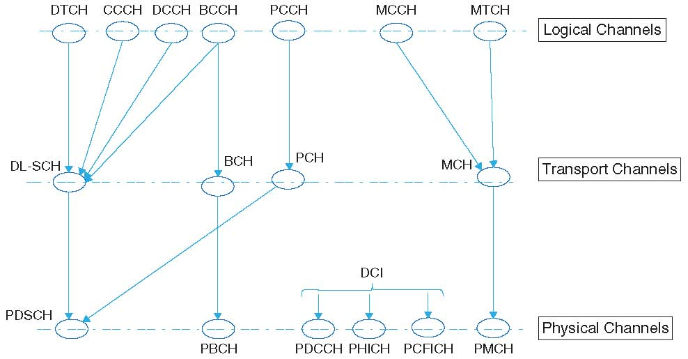
图 8: LTE下行链路逻辑信道，传输信道和物理信道之间的关系
在单播网络中，我们只有一种数据业务逻辑信道DTCH（Dedicated Traffic Channel），有四种控制逻辑信道：广播控制信道BCCH（Broadcast Control Channel）,寻呼控制信道PCCH（Paging Control Channel）,公用控制信道CCCH（Common Control Channel）和专用控制信道（Dedicated Control Channel）。除了PCCH之外的逻辑控制信道和专用逻辑业务信道都形成了传输信道中的下行共享信道DLSCH。PCCH信道映射为传输信道中的寻呼信道PCH。传输信道中的DLSCH信道和PCH映射为PDSCH信道。物理信道中的PDSCH信道和其他的四种物理信道PDCCH，PHICH，PCFICH，PBCH提供了单播网络中所需要的数据信息，控制信息和系统信息。
在多播和广播网络中，业务逻辑信道为多播业务信道MTCH（Multicast Traffic Channel）,其对应的逻辑控制信道为MCCH（Multicast Control Channel）。这两个信道构成了传输信道中的多播信道MCH（Multicast Channel）。最后PMCH构成了MBMS业务的物理信道。
11.2 下行物理信道的作用
PDSCH携带用户来自MAC的传输块。传输块通常在一个子帧中传输完毕（在MIMO的空分复用模式中，一个子帧可以传输多个传输块）。自适应调制编码结束后，得到的调制符号被映射到时频资源栅格上，最终映射到发射天线上发射出去。在LTE系统中采用自适应调制编码，这意味着基站根据终端反馈的信道状态决定发送信息的调制编码方式和MIMO模式。因此终端对信道的测量信息必须反馈回基站，帮助基站生成下一次传输符号。在每一子帧中，基站告诉终端调度信息，方便终端进行符号映射。基站需要告诉终端的信息包括：使用的RB数，传输块的大小，调制方式，码率和MIMO模式。
为了方便基站和终端之间的传输，伴随PDSCH信道定义了PDCCH信道。PDCCH信道主要传输终端恢复数据需要的信息，数据恢复过程包括接收，均衡，解调和姨妈。因为PDCCH信息必须在PDSCH开始之前被正确译码，下行链路中的PDCCH占用了每一子帧的前几个OFDM符号。具体PDCCH占用多少个OFDM符号（可能是一个，两个，三个或者四个）依赖于多个参数，包括带宽，子帧号，单播业务还是多播业务。
在PDCCH中的信息被称为下行控制信息DCI。系统占用的RE数依DCI的格式而变化。如图9所示，LTE系统中定义了10中DCI格式（LTE-A中定义了更多）。
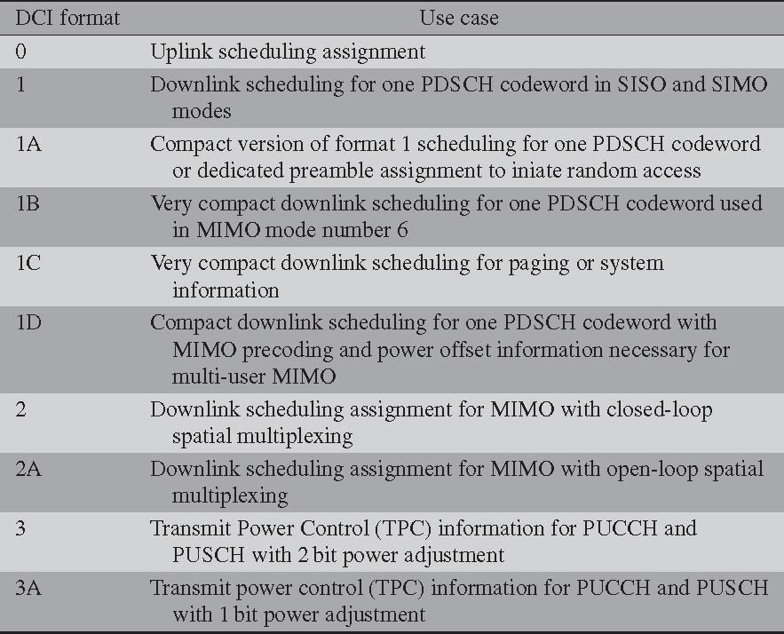
图 9: LTE系统中的10中DCI
每一种DCI携带的控制信息包括RB大小，多天线结构，调制方式，码率和传输块大小，HARQ信息（包括线程数，冗余版本，是否存在新数据的标志位），图10给出了DCI1包含的信息。
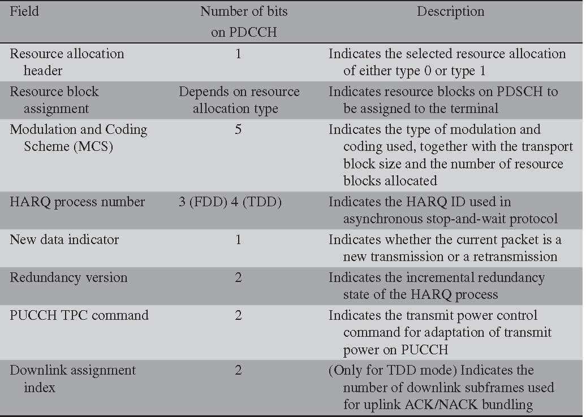
图 10: LTE系统中DCI 1的内容
PCFICH用于指定DCI占用的OFDM符号数。PCFICH映射到每一个子帧第一个OFDM符号的特定RE上。PCFICH的值（1,2,3,4）取决于带宽，帧结构和子帧序号。对于大于1.4MHz的系统，PCFICH的值最多为3。对于1.4MHz的系统，PCFICH的值最多为4。
除了PDCCH和PCFICH信道，LTE定义了另外的控制信道PHICH，该信道用于携带物理层HARQ传输的相关信息。PHICH携带上行数据包的应答信息。UE上行传输一个数据包之后，会在一个预先规定的时间间隔内在PHICH中寻找对应的应答信息。这个预先规定的时间间隔由上层决定。在一次常规循环前缀的传输过程中，PHICH位于第一个子帧的第一个OFDM符号，在扩展的循环前缀传输过程中，PHICH位于前三个子帧中。
PBCH携带主要的控制信息，包括PHY系统信息和小区搜索过程中用到的小区信息。正确译码MIB之后，UE可以解读下行控制信息和数据信道，从而执行相关的操作接入系统。MIB在PBCH上传输，以40ms为周期，对应4个无线帧。MIB在每一个无线帧的第一个子帧上传输。MIB包括四个信息域：前两个信息与包含下行系统带宽和PHICH结构的信息。下行系统带宽单位是RB（可选6种：6,15,25,50,75,100，分别对应1.4MHz，3MHz，5MHz，10MHz，15MHz，20MHz带宽）。MIB中PHICH结构域的信息指定PHICH的时长和大小。PBCH总是在一个无线帧中的第一个子帧第一个时隙的前4个OFDM符号中。在频率域，PBCH占用零频周围的72个子载波。
11.3 上行信道
表4总结了LTE系统的上行信道。
| 物理信道名称 | 缩写 | 功能 |
|---|---|---|
| Pyhsical Uplink Shared Channel | PUSCH | 上行数据业务 |
| Physical Uplink Control Channel | PUCCH | 上行控制信息 |
| Physical Random Access Channel | PRACH | 初始随机接入 |
其中PUSCH信道携带UE上行传输的数据。PRACH用于UE初始接入网络。在PRACH中，UE发送随机接入前缀。LTE的随机接入前缀是ZC序列。PUCCH用于发送上行控制信息UCI。UCI包括资源请求，ACK/NACK以及下行信道状态（包括CQI，PMI，RI）。CQI是Channel Quality Indicator信道质量指示，PMI是预编码矩阵指示，RI是秩指示。
图11给出了LTE上行逻辑信道，传输信道和物理信道之间的关系。
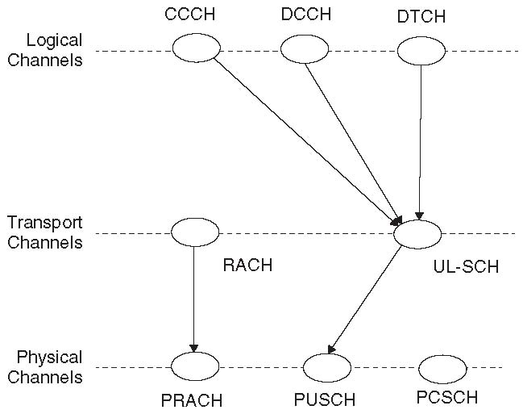
图 11: LTE系统上行链路逻辑信道，传输信道和物理信道之间关系
在逻辑信道层，有一个信道专门传输数据业务：专用业务信道（Dedicated Traffic Channel,DTCH），两个逻辑控制信道：1）通用控制信道（Common Control Channel，CCCH）和2) 专用控制信道(Dedicated Control Channel)。这三个信道形成了传输层的上行共享信道（Uplink Shared Channel, UL-SCH），最后PUSCH和PUCCH是物理信道。在传输层还有一个随机接入信道RACH，该传输信道映射为物理信道PRACH。
11.4 上行物理信道的功能
PUCCH传输三种控制信息：1）针对下行传输的ACK/NACK，2）调度请求，3）下行信道信息反馈CQI,PMI,RI。为了决定使用何种MIMO模式发送信号，UE必须测量当前的信道链接状况并向信道报告信道状态。这些信息都包含在PUCCH中。
CQI是下行信道质量的一种指示，UE通过PUCCH反馈给基站，用于下一次传输调度。基站根据UE的反馈决定使用调制方式和编码码率。根据不同的CQI，LTE中规定了16中调制方式和码率的组合。这些组合叫做MCS（Modulation Coding Scheme）。高CQI意味着信道质量高，意味着可以采用较高的调制阶数和编码码率。
PMI是预编码矩阵指示，基站使用预编码矩阵对发送信号进行预编码，使其更适合当前信道传输。在LTE系统中，为2,4,8天线的传输规定了预编码矩阵。
RI代表了有用的发射天线数，这个数跟MIMO信道矩阵的秩有关。在接下来的章节，我们会讨论LTE标准的MIMO模式，在此期间会对CQI，PMI和RI做更详细的论述。
12 物理信号
在物理信道上发送物理信号这些信号包括参考信号和同步信号。物理信号映射到指定的资源栅格上。本节简要讨论物理信号的构成。
12.1 下行参考信号
LTE标准的一个特点就是根据频域信道质量规划资源分配。例如，为了对下行信道进行划分，UE必须为基站提供信道状态信息（Channel State Information,CSI）。CSI可以通过下行链路中的参考信号获得。UE根据下行参考信号进行信道估计，进而进行信道均衡。同时，UE根据下行参考信号获得CSI（包括CQI，PMI，RI）,并反馈给基站。LTE为下行传输指定了五种类型的参考信号：1）小区特有参考信号（Cell-Specific Reference Signals,CSR） 2）解调参考信号（Demodulation Reference，DMRS），DMRS也叫UE特定参考信号，3）信道状态参考信号（CSI-RS）,4）MBSFN参考信号，5）定位参考信号。
CSR对于一个小区中的所有UE都是已知的，在每一个下行子帧中都发送CSR。在每一个下行子帧中都传输CSR。UE也可以使用CSR进行信道估计，并用于相干解调除了PMCH和PDSCH之外的信号。UE还使用CSR计算CSI。
DMRS用于下行的多用户发送模式，包括模式7,8,9。在发送模式7,8,9中CSR不用于信道估计。顾名思义，UE使用DMRS进行信道估计和信号解调。为了支持单层，在Release8中引入了DMRS信号。在Release 9中，可以支持大于两层传输。在Release10中，最大支持8个同时发送的参考信号。当只使用一个DMRS信号，我们在一对RB中有12个参考信号。稍后我们就会看到，CSR信号通过时频资源位置实现正交，而DMRS通过使用正交序列保持正交。
CSI-RS在Release10中第一次被引入。它们的主要作用是当发射天线数大于8时缓解CSR的负担。CSI-RS和CSR一样也用于计算CSI和信道估计。因此CSI-RS的使用仅限于下行传输模式9。MBSFN参考信号用户广播和多播网络中相干解调。最后，定位参考信号支持多小区之间的位置测量，协助估计UE位置。定位参考信号在Release 9中引入。
12.2 上行参考信号
在LTE系统中，有两种上行参考信号：1）DMRS，2）Sounding Reference Signal(SRS)。这两种信号都基于ZC序列。ZC序列同样也用于生成下行链路的主同步信号（PSS）和上行前导符号（Preamble）（用于随机接入）。不同UE的参考信号通过对基序列进行循环移动生成。
基站使用上行的DMRS信号解调PUCCH和PUSCH。在PUSCH信号中，当使用正常的循环前缀时，DMRS信号位于第四个OFDM符号中，每隔0.5ms重复一次，并延伸到整个RB。在PUCCH中，DMRS信号的位置依赖于控制信道的格式。
基站使用SRS信号估计不同频率的上行信道响应。SRS信号也用于估计TA。
12.3 同步信号
除了参考信号，LTE系统也定义了同步信号。下行同步信号的用途颇多，包括：检测帧边界，确定天线数量，小区搜索，相邻小区搜索和切换。在LTE系统中，为满足这些功能，定义了两个同步信号:1)主同步信号，Primary Synchronization Signal(PSS)和副同步信号（Secondary Synchronization Signal，SSS）。
主同步信号和副同步信号在直流子载波附近的72个子载波上传输，在TDD和FDD模式中，同步信号的位置不同。在FDD帧中，它们位于子帧0到子帧5之间，前后毗邻。在TDD帧中，它们彼此不相邻：SSS位于子帧0到子帧5的最后一个符号，PSS位于特殊子帧之后的第一个OFDM符号。同步信号与物理小区的ID有关。LTE规定了504个小区ID，这些小区ID被分为168个组，每一个组包含3个ID。SSS携带ID分组号（0到167），PSS则携带组内ID（0,1,2）
13 下行帧结构
LTE定义了两种下行帧结构：1）FDD下行帧结构；2）TDD下行帧结构。每一个帧由10个子帧构成，每一个子帧包含一定数量的资源栅格。这些资源栅格承载了用户数据，控制信道，参考信号和同步信号。本文以FDD为例阐述一个帧中这些资源的位置。
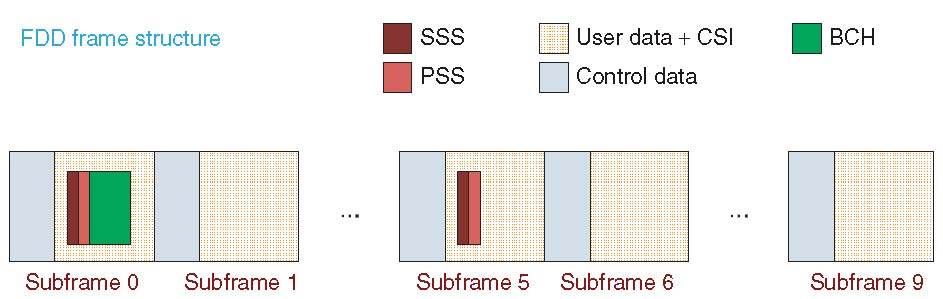
图 12: LTE FDD下行帧结构
图12 给出了FDD帧结构的大致构成。一个LTE帧时长10ms，一个帧由10个1ms的帧构成。每一个子帧由两个0.5ms的时隙构成。每一个时隙包含6个或者7个OFDM符号（据循环前缀长度而定）。DCI放在在每一个子帧的第一个时隙。DCI携带的信息包括PDCCH，PCFICH，PHICH。DCI占据了每一个子帧的前三个OFDM符号，这个区域也叫做L1/L2区域，因为这个区域携带从L2（MAC）到L1（PHY）的信息。携带MIB的PBCH位于子帧0。PSS和SSS位于子帧0到子帧5。PBCH，PSS和SSS占用直流子载波附近的6个RB，也就是72个子载波。另外，CSR信号在每一个RB中按照一定的时频模式放置。放置CSR的时频模式与当前传输使用的MIMO模式紧密相关。除了DCI，PSS，SSS，PBCH，其他的时频资源用于传输用户数据。
14 上行帧结构
LTE上行帧结构与下行帧结构有一定的相似之处。上行帧结构子帧长度也是1ms，由两个0.5ms的时隙构成。每一个时隙包含6个或者7个SC-FDM符号构成，同样依循环前缀的长度而定。
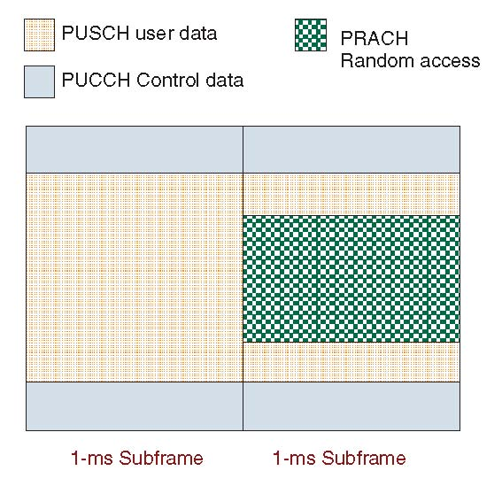
图 13: LTE FDD上行帧结构
如图13为了避免带外泄露，PUSCH信号置于RB中心部分。不同的用户可能会被分配不同的RB资源。PUCCH放置在边带，使用时隙间跳转提供频率分集。参考信号DMRS按照一定的时频pattern与用户的数据信号交织在一起。
15 MIMO
LTE和LTE-A系统之所以具有较高的最大数据传输速率，得益于MIMO（多天线技术）的引进。LTE协议把OFDM技术和MIMO技术完美的结合在一起，所以LTE系统是典型的MIMO-OFDM系统。相当多的通信专业博士论文题目中包含MIMO-OFDM字样，这与MIMO技术和OFDM技术的优势密不可分。之前我们看到对于OFDM系统，有一张对应的时频资源栅格表。而在MIMO-OFDM系统中，针对每一根有效的发射天线都有一张对应的时频资源栅格表。在接收端，经多个发射天线发射的信号叠加在一起。要把每一根接收天线上收到的多个叠加信号分开的过程叫做解MIMO，在这个问题上诸多研究人员提出了花样繁多的算法。虽然多天线技术带来了更高的计算复杂度，但是其优势明显，实在令人难以忽视。于是，众多通信工程师又在增益和复杂度之间折中，通信工程师的一生就是折中的一生，谁又不是呢？
接下来，我们看看到底MIMO技术带来了哪些优势？
15.1 接收分集
最简单也是最普遍使用场景的是在接收端使用多天线，这种场景中使用的技术叫做接收分集，如图14所示。
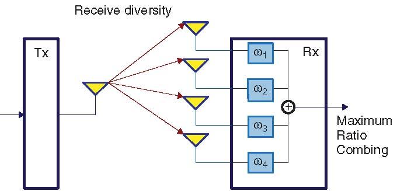
图 14: MIMO接收分集
接收分集最常用的信号处理算法是最大比合并（Maximum-Ratio Combing）。这种方法在LTE协议的传输模式1中被使用。这种模式下只有一根发射天线，接收天线可以有一根（SISO）,也可以有多跟（SIMO）。除了MRC算法外还有选择合并算法（Selection Combining， SC）。在MRC算法中，我们合并了多个接收信号，得到结果尽可能的接近原始发射信号。在SC算法中，只有具有最高SNR的信号才会用于基带信号处理。
MRC是一种非常有效的处理MIMO信号的算法。在衰落信道中，干扰信号的能量较大，接收端收到的多个信号之间能量不尽相同。在实际应用中，许多宽带信号受多多径影响，导致频域内收到频率选择性衰落。为了对抗频率选择性衰落，我们必须采用一些均衡技术。并且，为了达到最佳的均衡效果，均衡操作最好在频域内完成。
15.2 发射分集
发射分集技术是指在发射端采用多跟发射天线，采用一定的编码方式（比如空时分组码）将信号的多个版本通过多天线发射出去。采用发射分集技术的发射机对信号进行的编码除了空时分组码，还包括空频分组码。空时分组码调制将信号映射到空时域，而空频分组码将信号映射到空频域。
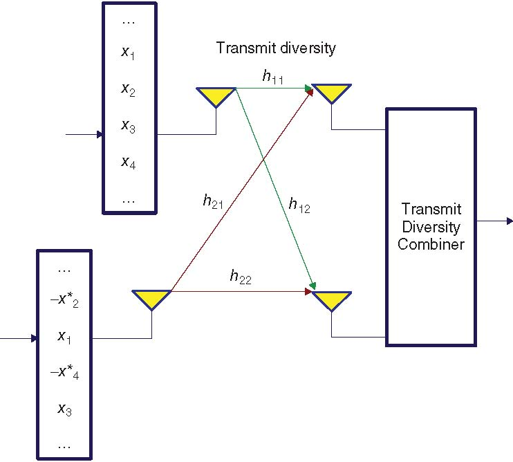
图 15: LTE 空频分组编码
在LTE的发送模式2中支持空频分组编码。具体的，针对双发射天线和四发射天线，分别支持SFBC和FSTD（Frequency Switched Transmit Diversity）。发射分集不会带来数据速率的提升，它的作用是提高可靠性。另外一些技术比如空分复用（Spatial Multiplexing）用来提高数据传输速率。
15.3 空分复用
采用空分复用技术，多个相互独立的数据流从多个发射天线发出，极大的提高了发射速率。这也是多天线技术能够使得信道容量随发射天线数和接收天线数之间最小值呈线性增长的原因。空分复用技术的多个流可以采用不同的调制方式，这种灵活的信号处理技术大大提高了频谱利用率。然而空分复用技术的优点仅当多天线之间的信道互相不相关的时候才会体现。空分复用技术把多径技术变废为宝。在具有多径效应的衰落信道上采用空分复用技术反而会提升系统性能，MIMO技术把之前通信技术人员头疼的多径效应变废为宝。
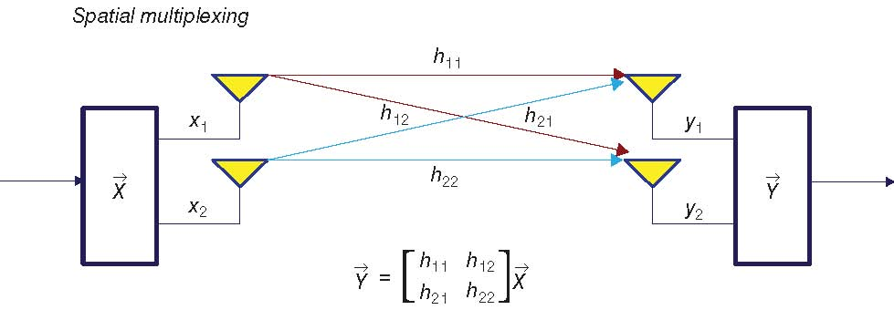
图 16: MIMO空分复用模型
图16给出了 \(2\times 2\)空分复用的天线构成。在每一个子载波符号 \(x_{1},x_{2}\)通过两个天线发射出去，接收符号为 \(y_{1},y_{2}\)是 \(x_{1},x_{2}\)的线性组合。线性组合系数为信道矩阵系数 \(H\)，所以整个模型的数学描述为：
\begin{equation} \label{eq:spatialmultiplexing} \begin{bmatrix} y_{1} \\ y_{2} \end{bmatrix} = \begin{bmatrix} H_{11}& H_{12} \\ H_{21}& H_{22} \end{bmatrix} \begin{bmatrix} x_{1} \\ x_{2} \end{bmatrix} + \begin{bmatrix} n_{1} \\ n_{2} \end{bmatrix} \end{equation}其中矩阵 \(\mathbf{H}\)表示频域信道响应，\(H_{ij}\)表示第 \(i\)根接收天线和第 \(j\) 根发射天线之间的信道响应。式\ref{eq:spatialmultiplexing}写成矩阵的形式为：
\begin{equation} \label{eq:mimospatial} \mathbf{y} = \mathbf{Hx} + \mathbf{n} \end{equation}其中 \(\mathbf{n}\)是高斯噪声， \(\mathbf{x}\)是发射信号， \(\mathbf{y}\)是接收信号。当\(\mathbf{x}\)属于同一个用户时，这个用户的多个数据流通过多个天线发射出去，我们称这样的发射模式为SU-MIMO，即单用户MIMO。以此类推，当\(\mathbf{x}\)属于多个用户时，我们称此时的发送模式为MU-MIMO，即多用户MIMO。
空分复用的一个核心问题是式\ref{eq:spatialmultiplexing}是否有解，或者是否有唯一解。这个问题涉及到MIMO矩阵 \(\mathbf{H}\)的奇异性。当多个接收天线上收到的信号之间相关时， \(\mathbf{H}\)的行或者列是相关的。这意味着矩阵 \(\mathbf{H}\)是不可逆的。因此对于空分复用模式，估计MIMO信道矩阵的秩是必须的。因为信道矩阵的秩决定多个发射天线是否可以被充分的复用，换句话说信道矩阵的秩决定了空分复用模式中最多可以发射的数据流的个数。在LTE协议中，矩阵的秩也被称为空分复用的层数。要想获得空分复用的增益，最重要的一点是信道估计质量要高。
在闭环MIMO模式中，矩阵的秩是通过终端计算然后通过上行信道反馈给基站的。如果信道不是满秩的，则只有有限的小于信道矩阵维度（行数或者列数）的流可以被复用。LTE的这个特性也叫作秩自适应。
15.4 波束成型
在波束成形模式中，多个发射天线可以生成一种天线模式，然后朝向UE发射能量。说的通俗一些就是调整舞台上多个探照灯方向一起向那个领舞聚焦一样。图17也形象的解释了波束成形。下行MIMO传输模式7支持波束成型。
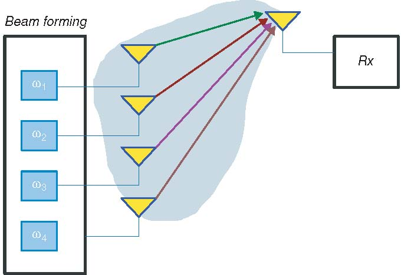
图 17: MIMO波束成型
波束成形的最大好处就是增强了接收信号的强度。通常而言，当发射端天线阵列的天线数量大于8的时，波束成型的效果比较好。在实现波束成型的过程中，每一根天线上都被赋予一定的复数增益（也叫权重）。通过调节这个复数，整个传输的波束可以朝向不同的方向。
LTE系统中既没有规定使用波束成型技术必须的最小天线数也没有限制调整复数增益的算法。LTE协议规定天线端口5为虚拟的波束成型天线端口。在传输模式7中也规定了特定的UE参考信号，用于估计波束成型模式下的信道。同一个RB上的UE拥有相互正交的参考信号，这样不同UE可以估计自己的信道，并进行均衡和解调。
15.5 循环延迟分集
循环延迟分集（Cyclic Delay Diversity,CDD）是LTE系统规定的另外一种形式的分集技术，该技术和开环空分复用技术一起使用。CDD通过对不同发射天线上的符号进行循环位移，从而达到发射多个信号冗余的作用。这有点类似于预编码。在OFDM传输中，CDD位移对应于频率域的相移。因此频域的相移就是预编码矩阵。CDD用于开环空分复用，和高速移动的通信场景（在这个场景中，及时的反馈信道状态变得异常困难）。我们很容易就可以把CDD推广到多于两个天线上，同时我们还可以采用不同的移位位数。
16 MIMO模式
表5给出了LTE协议规定的传输模式和它们对应的天线配置方案。
| LTE传输模式 | 天线配置 |
|---|---|
| 模式1 | 单天线传输 |
| 模式2 | 发射分集 |
| 模式3 | 开环，基于码本的预编码 |
| 模式4 | 闭环，基于码本的预编码 |
| 模式5 | 模式4的多用户版本 |
| 模式6 | 模式4的单流版本 |
| 模式7 | Release8，基于波束成形的单流传输，基于非码本的预编码 |
| 模式8 | Release9，非码本预编码，最大支持两个流 |
| 模式9 | Release10，非码本预编码，最大支持8个流 |
模式1采用接收分集技术进行信号恢复。模式2基于发射分集。模式3基于开环的空分复用，仅支持单用户。模式4基于闭环的空分复用，仅支持单用户。模式5基于模式4支持多用户MIMO，每个用户最大支持一个流。模式6支持波束成型。模式7到模式9支持非码本的空分复用，最大流分别为1个，2个，4-8个。自从LTE-Advanced（Release10）通过引入模式9，下行MU-MIMO得到了增强。在Release 10中，为了配合模式9，引入了新的参考信号CSI-RS和DMRS。这些参考信号的引入使得非码本的预编码成为可能。
17 物理层信号处理流程
为了理解LTE的PHY层，我们需要清楚的知道以下操作：信道编码，扰码，调制（星座图映射），映射调制符号到资源栅格上（包括映射用户数据，参考信号和控制信息）,然后按照指定的MIMO模式，发射信号。
17.1 物理层下行信号处理流程
整个发射机的信号处理过程可以理解为传输块处理和物理信道处理。如图18所示，所谓块处理就是传输块添加CRC校验，信道编码和码字生成过程，所谓物理信道处理就是常见的基带信号处理过程，包括扰码，星座图映射等等等等。DLSCH和PDSCH的处理过程要点可以总结如下：
- 发送数据块CRC校验
- 码快拆分以及码块CRC校验
- 1/3码率Turbo编码
- 根据要求的码率进行速率匹配
- 码块级联生成码字
- 对每一个码字进行扰码
- 对扰码结束的码字进行调制
- 映射调制符号到一个或者多个流
- 对天线端口每一个流上的符号进行预编码
- 映射每一个天线端口的调制符号到资源栅格
- 生成每一个天线端口的OFDM符号
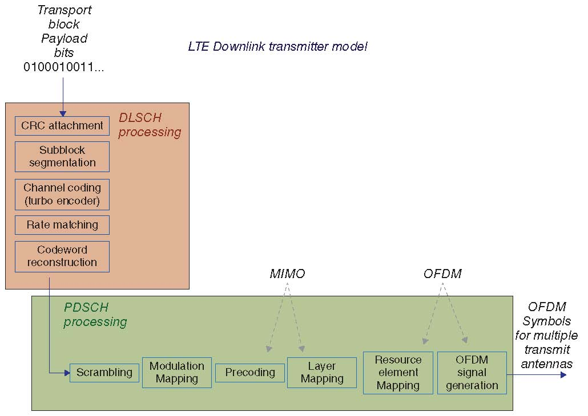
图 18: LTE DLSCH和PDSCH信号处理过程
图18 给出从传输块到物理层OFDM符号生成的整个过程。这个过程是我一直以来的关注的重点，投入了不少时间。在其他博文里我对这些模块进行详细的阐述，有的文章还会附上matlab仿真。鉴于本文的定位，我就不一一展开，点到为止。
17.2 物理层上行信号处理流程
与DLSCH和PDSCH类似，ULSCH和PUSCH的信号处理流程要点可以总结为：
- 传输块CRC校验
- 码块分割以及码块CRC校验
- 1/3码率Turbo编码
- 根据要求的码率进行速率匹配
- 级联编码码块生成码字
- 扰码
- 星座图映射
- 映射调制符号到一个或者多个流
- DCT生成复数符号 （因为上行采用SC-FDM空口波形）
- 对生成的复数符号进行预编码
- 映射预编码后的符号到资源栅格上
- OFDM调制生成SC-FDM信号
图19给出了以上步骤的前后顺序，图中的各个功能模块在3GPP的协议中均有详细的描述。
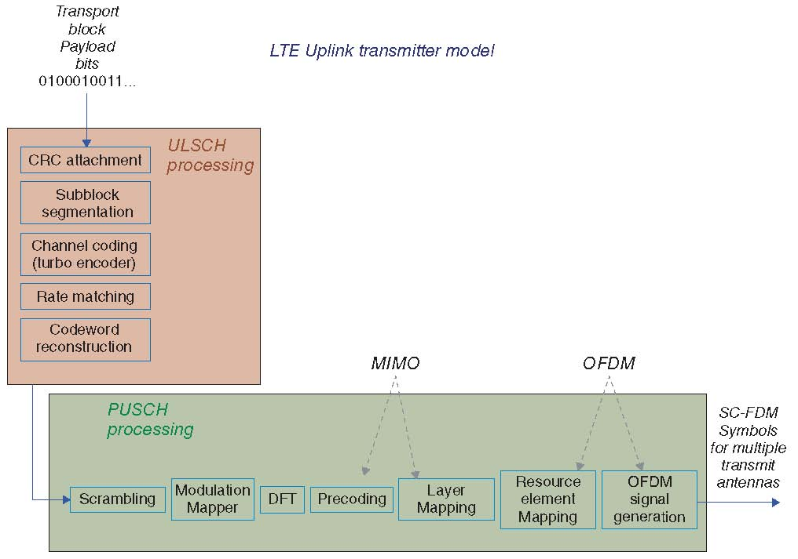
图 19: LTE ULSCH和PUSCH信号处理过程
接下来简单介绍两个较为独特的特性：1）SC-FDM，2）MU-MIMO。
17.2.1 SC-FDM
在LTE上行链路中有一个特殊的处理过程：在编码比特经过星座图映射之后，对映射的符号进行了一次DFT操作，这个操作的主要作用是把带发射的时域信号扩展到整个频域。这样做的好处是相对于多载波信号，经过DFT扩频的信号占用整个频带，具有较低的峰均功率比（PAPR）。所以，SC-FDM技术有是有也叫作DFT-OFDM技术。DFT的FFT点数要比IFFT的点数小，这两个FFT的点数都是2的倍数（因为我们对于素数倍数的FFT有快速算法，比如，2,3,5）。
有多种方法把经过DFT处理复数符号映射到时频资源，常见的有：1）局部映射；2）分布式映射。局部映射把DFT之后的符号映射到连续的子载波上，这样的好处是：1）接收机可以获得较好的信道估计质量，用户的导频也比较好处理；2）多个用户的调度也比较方便实现。分布式映射方法把DFT扩频符号映射到分散的子载波上，这种方法可以获得一定的频率分集增益，由于导频分散在时频资源栅格，信道估计质量没有局部映射信道估计质量高。因此，局部映射和分布式映射存在系统性能和频率分集增益之间的折中。
17.2.2 MU-MIMO
在移动系统中，UE的天线数 \(N\)通常小于基站的天线数 \(M\)。MIMO系统的增益随着 \(\min(N,M)\)呈线性增长。因此SU-MIMO的性能受UE的天线数 \(N\)限制。在LTE系统的下行处理过程中，引入了MU-MIMO技术（传输模式7,8,9）。但是在上行处理过程中，出于功耗和系统成本考虑，尽管终端可能包含多个发射天线，Release 8仅支持SISO的传输模式。
采用天线选择技术，可以从每个UE上选择一个发射天线，这些天线被基站组织起来构成上行MU-MIMO, 多个用户使用自己的单根天线在相同的时频资源上传输各自的数据，图20给出了上行MIMO示意。
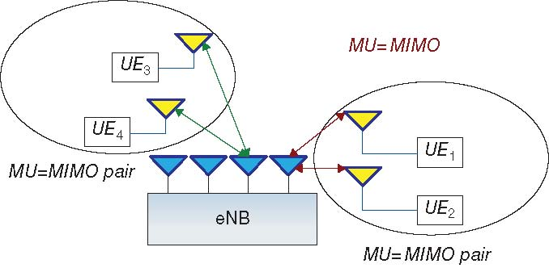
图 20: LTE 上行MU-MIMO示意图
在图20中，通过将多个UE的天线组织起来，构成了MU-MIMO对。基站在同一个子帧内的同一个RB上调度多个用户发送数据。根据系统支持的RB数，我们可以调度多个MU-MIMO对。尽管在图20中，每一个MU-MIMO对只包含了两个UE，但是在LTE系统中一个MU-MIMO对最多支持8个用户在同一个RB上传输。
18 尾声
好长的一篇博文终于敲完。在这里，LTE系统物理层相关的模块都蜻蜓点水般有所提及。整个LTE系统凝聚了无数通信工程师的心血，非一篇博文所能涵盖，更详细的描述还需要仔细的研读协议。如果觉得协议显得枯燥无味，互联网上也有很多关于LTE的网站和博文。当然，我的这个博客也希望能够深入浅出的阐述LTE协议的精妙：一方面巩固自己所学，另一方面帮助生手入门。赠人玫瑰手有余香，何乐不为。